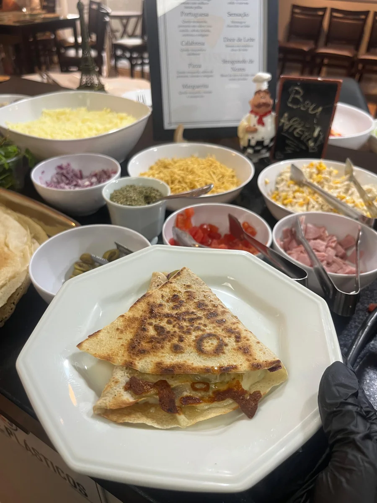
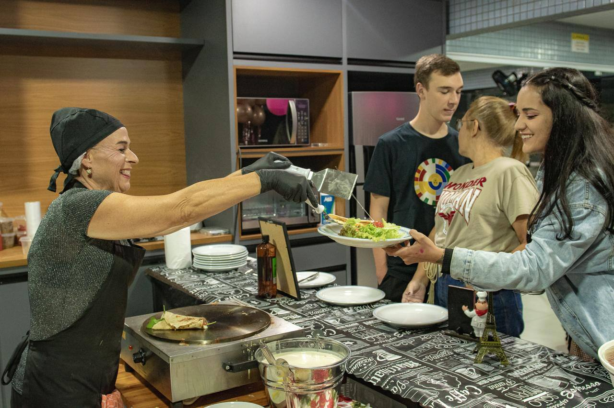
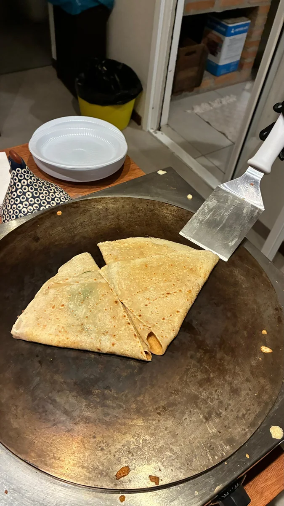
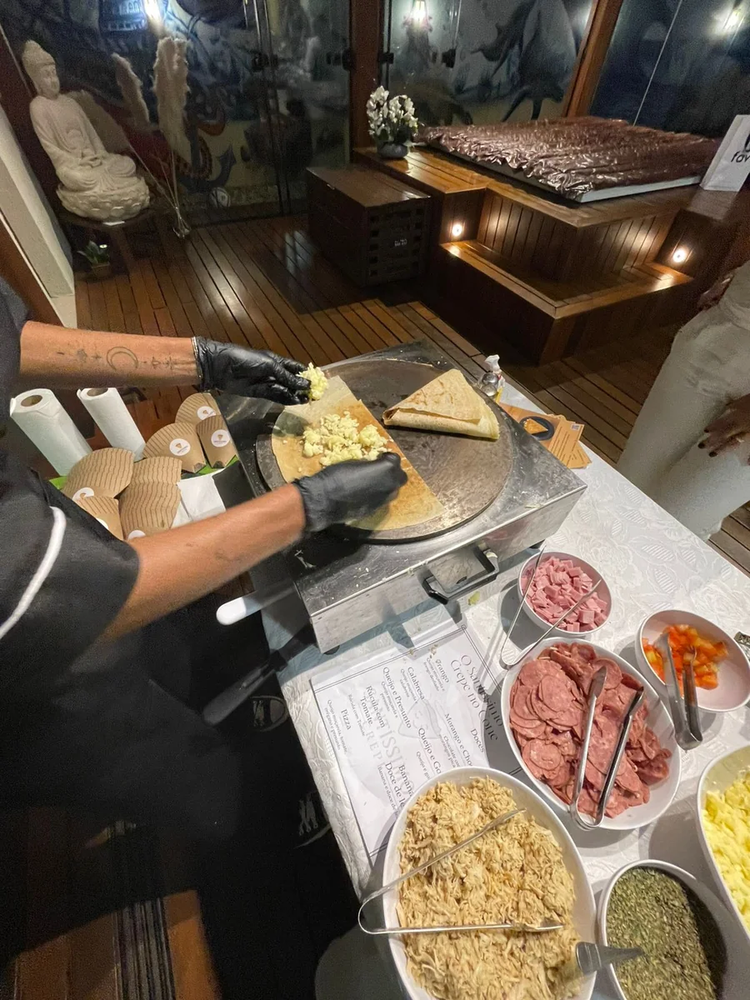
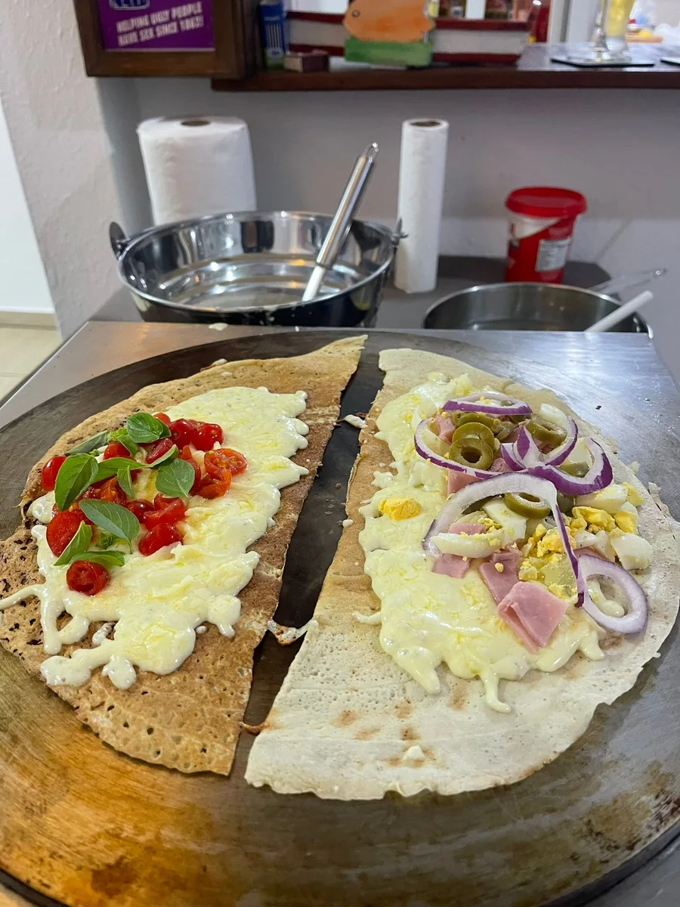
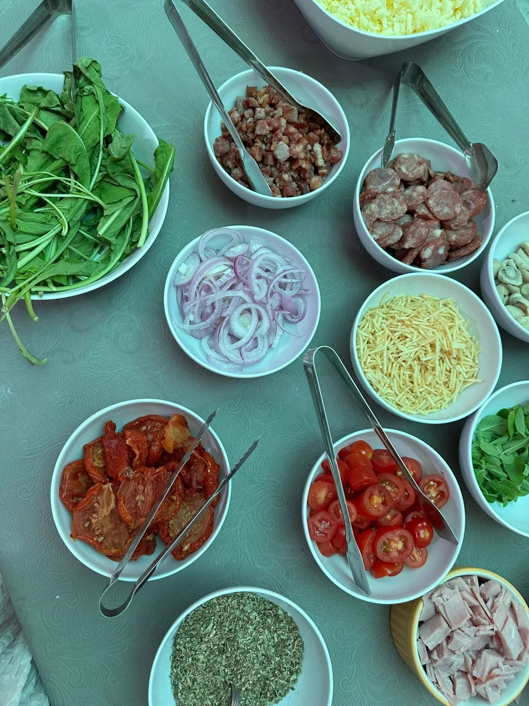
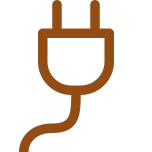

3 horas de serviço
Crepes servidos à vontade: aproximadamente 2 horas de salgados e 1 hora de doces.
Buffet de crepes a domicílio • Florianópolis e região
O original crepe francês. Desde 2014 em Curitiba, e agora em Florianópolis, encantando convidados nos mais variados eventos com um maravilhoso buffet de crepe francês em casa.

O Santíssimo Crepe
Nossa equipe prepara crepes doces e salgados na hora, para que cada convidado aproveite uma experiência deliciosa, leve e especial.
Celebre sem preocupação

Com clientes satisfeitos que voltam para provar mais, o Santíssimo Crepe é uma alternativa deliciosa à tradicional pizza em casa.
Fechamos nossas agendas com antecedência. Conte sobre a sua celebração e garanta sua data.
Conte sobre seu evento →Como funciona
Crepes servidos à vontade: aproximadamente 2 horas de salgados e 1 hora de doces.
Seus convidados acompanham o preparo e aproveitam cada crepe sempre fresquinho.
Opções pensadas para diferentes tipos de eventos e celebrações.
Salada e molhos já inclusos no cardápio Divindade.
Galeria




Veja de perto
Do preparo à última mordida: uma experiência artesanal para receber bem seus convidados.
Para um atendimento tranquilo
Esses itens ajudam nossa equipe a garantir um atendimento completo e organizado no seu evento.
Para colocar as chapas dos crepes.

Com estrutura elétrica para as chapas.
Para armazenar o sorvete. Geladeira normal também serve.
Para higienização dos insumos e equipamentos.
Pratos, copos e talheres fornecidos pelo contratante.
Fale direto com quem cuida do seu orçamento. Você pode começar com uma ideia — não precisa ter tudo decidido.
Conversar pelo WhatsAppSe já souber, diga a data, a cidade e quantas pessoas espera receber. A mensagem pode ser editada antes do envio.
Ver os cardápios